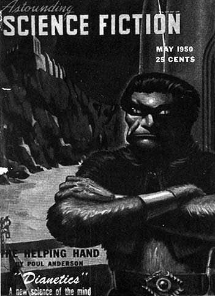

Chapter 9
The Strange Début of Dianetics
'My vanity hopes that you will secure credit to me for eleven years of unpaid research, but my humanity hopes above that that this science will be used as intelligently and extensively as possible, for it is a science and it does produce exact results uniformly and can, I think, be of benefit.' (Letter from L.R. Hubbard to Dr Joseph Winter, August 1949)
 (Scientology's account of the years 1949-50.)
(Scientology's account of the years 1949-50.)
In the spring of 1949, Ron and Sara had moved to the New Jersey shore, to a beach cottage at Bay Head, a discreetly genteel yachting resort on the northern tip of Barnegat Bay. Rich New Yorkers who could not quite afford the Hamptons kept large summer houses at Bay Head where they sailed the ruffled blue waters of the bay, played tennis and attended each other's cocktail parties. The Hubbards' rented cottage was one of the smallest properties, but Sara, who suspected she was pregnant, was delighted with it. She was weary of their peripatetic lifestyle; she calculated that in only three years of marriage they had set up home in seven different States and had never stayed in one place for more than a few months. Bay Head, with its country club aura, did much to lift her spirits.
John Campbell had persuaded them to move from Georgia and had found them the cottage which was less than a hour's drive on the Garden State Parkway from Plainfield, where he and his wife lived. He wanted Ron close by because he wanted, passionately wanted, to be involved in what he considered to be the historic genesis of Dianetics.
It was predictable, in the course of their working relationship as science-fiction editor and science-fiction writer, that Campbell and Hubbard would spend time together discussing ideas and that Ron would test his theories on a man as responsive as the editor of Astounding. Campbell was an intellectual maverick: he had studied physics and chemistry at college, had a mechanistic approach to psychology and was fascinated by gimmicks and technology, but he also flirted with psychic phenomena like dowsing, telekinesis,
telepathy and clairvoyance. Ron could not have had a more attentive audience when he first began to propound his theory that the brain worked like a computer which could be made markedly more efficient by clearing its clogged memory bank.
Always a persuasive talker, Hubbard possessed a natural ability to marshal a smattering of knowledge into a cogent and authoritative thesis, interwoven with scientific and medical jargon. His 'scientific' approach to unravelling the mysteries of the human psyche precisely accorded with Campbell's own view that humanity could be investigated with the techniques and impersonal methodology of the exact sciences,[1] and although Ron's ideas stemmed more from his exuberant imagination than from any research, to Campbell what Hubbard had to say was tantamount to a revelation on the road to Damascus.
He compared individual memory to a 'time-track' on which every experience was recorded. Using a form of hypnosis, he believed painful experiences could be recalled and 'erased' with consequent beneficial effects to both physical and mental health. Ron offered to demonstrate on a convenient couch at Campbell's home in Plainfield. He drew the blinds, told Campbell to relax, close his eyes on a count to seven and try to recall his earliest childhood experience. Gently prompted by Ron to produce more and more details, Campbell was surprised to find he could resurrect long-forgotten incidents with such clarity that it was as if he had physically returned to the time and place. After a couple of sessions, he seemed to be able to go back far enough to actually re-live the astonishing experience of his birth and at the same time he discovered that the chronic sinusitis that had plagued him all his life was much improved.
Thereafter, Campbell was the first committed disciple of Dianetics, utterly convinced that L. Ron Hubbard had made profound discoveries about the workings of the mind and that the fundamental nature of human life was about to be changed for the better. [Hubbard himself was perhaps as concerned to make money as he was to help humanity and he had some interesting ideas about how to do it. Around this time he was invited to address a science-fiction group in Newark hosted by the writer, Sam Moskowitz. 'Writing for a penny a word is ridiculous,' he told the meeting. 'If a man really wanted to make a million dollars, the best way to do it would be to start his own religion.'[2]]
Determined to help Ron propagate his new 'science', in July 1949 Campbell wrote to Dr Joseph Winter, a general practitioner from St Joseph, Michigan, who had contributed occasional articles on medical subjects to Astounding: 'L. Ron Hubbard, who happens to be an author, has been doing some psychological research . . . He's gotten important results. His approach is, actually, based on some very early
_______________
1. The Universe Makers, Donald Wollheim, 1971
2. Los Angeles Times, 27 August 1978
work of Freud's, some work of other men, and a lot of original research. He's not a professional psychoanalyst or psychiatrist, he's basically an engineer. He approached the problem of psychiatry from the heuristic viewpoint - to get results.'
Campbell described the case of an amputee veteran suffering from severe depression who had been helped by Hubbard after conventional psychiatry had failed to alleviate his condition. Psychiatrists had injected sodium pentothal to enable the veteran to re-live his war experience, taking him through the moment he was hit by a mortar shell to the moment he recovered consciousness in the aid station, but he continued to be depressed and insist he would be better off dead. Using Dianetics, Hubbard had also taken the veteran back through the shell burst but discovered that while he was unconscious medics had said, 'This guy's hopeless, he's better off dead anyway' and chosen to move other casualties first. This incident, it transpired, was the cause of his problems.
Winter was intrigued: he had never considered before that an unconscious patient could in any way be aware of what was going on around him. He wrote to Campbell asking for more information and back came another long letter elaborating on the theory and concluding: 'With cooperation from some institutions, some psychiatrists, he [Hubbard] has worked on all types of cases. Institutionalized schizophrenics, apathies, manics, depressives, perverts, stuttering, neuroses - in all, nearly 1000 cases. But just a brief sampling of each type; he doesn't have proper statistics in the usual sense. But he has one statistic. He has cured every patient he worked with. He has cured ulcers, arthritis, asthma.'
While Winter was avowedly incredulous at the idea that a man with no medical training of any kind was able to cure one hundred per cent of his patients, he did not share the tendency of his medical colleagues to dismiss all lay practitioners as dangerous cranks. He had always been fascinated by the enigmas of human behaviour and believed in a holistic approach to medicine which was amenable to unconventional hypotheses. He contacted Hubbard, suggested that he present his findings to the medical profession, and offered to help.
Hubbard quickly replied, promising to forward an 'operator's manual' for Winter's use and thanking him for his interest. When his manual arrived, Winter made several copies and gave them to psychiatrist friends in Chicago, but was disappointed by their negative reactions. They were interested in the ingenuity of Hubbard's ideas, but strongly sceptical of their efficacy. However, Winter still felt the subject was worth pursuing and made arrangements to visit Bay Head to observe Dianetics 'in action'. Ron, who was acutely aware
of the potential value of recruiting a doctor to the Dianetic cause, invited Winter to stay with him and Sara at the cottage on the beach.
He arrived in Bay Head on 1 October 1949, and Sara, now several months into her pregnancy, did her best to make the young doctor welcome, despite somewhat cramped conditions. Winter discovered that Hubbard was spending much of his time testing his theories by 'running' science-fiction fans brought in by Campbell. The purpose of 'running' a patient, Hubbard explained, was to send them 'down the time-track' to uncover their 'impediments'.
Winter sat in on several sessions, then agreed to Ron's suggestion that he should be 'run' himself. 'The experience was intriguing,' he said. 'I felt, in general, that I was obtaining some benefits from Hubbard's methods of therapy. I was also aware of the possible inaccuracies of a subjective evaluation of my own progress: I therefore endeavoured to make up for this by observing the other patients closely. It was possible during this short period of observation to note only the differences in their behaviour before and after each therapy session. The changes were obvious: before a session I would see agitation, depression and irritability; after a session the patient would be cheerful and relaxed.'[3]
Although he had some reservations, particularly about Hubbard's absolutism and inclination to make sweeping generalizations, he was unquestionably impressed. He noted the emotional discharge that resulted when patients recalled painful experiences; he himself re-lived the terror he had felt as a child on learning of his grandmother's death and found it dissolving in a fit of sobbing and weeping, after which he felt a great sense of relief.
Winter did not return to Michigan until Thanksgiving, when an incident occurred which finally convinced him of the validity of Dianetics. He arrived home to discover that his six-year-old son was having problems: the boy had developed a paralyzing fear of the dark and of ghosts, which he believed were waiting upstairs to strangle him. Winter recalled that his wife had experienced considerable difficulties during the boy's birth and decided to apply Dianetic techniques to see if there was any connection. He was flabbergasted by the result.
The doctor persuaded his son to lie down, close his eyes and try to recall the first time he had ever seen a ghost. To Winter's amazement the boy described in detail the white apron, cap and mask of the obstetrician who had delivered him and how he felt he was being strangled. Winter and his wife discussed what had happened and concluded with certainty that the only time their son had seen that doctor in his surgical gown was at the moment of his birth. It was evident to them that the boy's fear was connected with his struggle to be born and his phobia soon disappeared.
_______________
3. A Doctor's Report on Dianetics, Joseph A. Winter, 1951
Believing himself to be at the possible dawn of a 'Golden Age of greater sanity', Winter returned to Bay Head after the holiday enormously optimistic about the prospects for Dianetics. 'I immediately became immersed in a life of Dianetics and very little else,' he recorded. Hubbard and Campbell were deeply involved in the projected article for Astounding and Winter began work on the preparation of a paper explaining the principles and methodology of Dianetic therapy, intended for presentation to the medical profession. Ron, who made no secret of his contempt for the medical establishment (often to the considerable embarrassment of Dr Winter), was not in the least surprised by the reception it received: the Journal of the American Medical Association and the American Journal of Psychiatry both rejected the paper for publication on the grounds of insufficient clinical evidence of the technique's effectiveness.
Undeterred, the three men continued developing and refining Dianetic theory, slowly bringing into their orbit other converts, notably a young electrical engineer by the name of Don Rogers and Art Ceppos, head of Hermitage House, a small medical and psychiatric textbook publisher who had contracted, at Campbell's instigation, to publish a book about Dianetics. The 'Bay Head Circle', as it came to be known, devoted many hours to discussion of terminology. Ron was still using the word 'impediment' to describe painful past experiences, although they all agreed that a new word was needed to avoid confusion. For a while, impediment was replaced by 'norn', the name of the Norse goddesses said to control Man's destiny, but in the end they plumped for 'engram', which was defined in Dorland's Medical Dictionary, as a 'lasting mark or trace'.
Meanwhile, Ron found time to dash off a feature about Dianetics for the Explorers Club journal, in which he explained that he had developed the therapy as a tool for expedition commanders to maintain the health and morale of their men. 'That it apparently conquers and cures all psychosomatic ills', he added with barely feigned modesty, 'and is of interest to institutions where it has a salutary effect upon the insane, is beyond the province of its original intention.' Untroubled, as always, by facts, Ron nonchalantly informed his fellow members that details of the science could be found, 'where it belonged', in textbooks and professional publications on the mind and body.[4]
[Credit for the inspiration for Dianetics would be variously and fancifully attributed over the years; at one point Hubbard claimed his interest in the mind had been stimulated while at university by comparing the rhythmic vibrations of poetry in English and Japanese, in which language he was, of course, fluent[5].]
Shortly before Christmas 1949, Hubbard finished the article for
_______________
4. Explorers Journal, Winter/Spring 1950
5. Hubbard's autographical notes, 1972
Astounding, but Campbell agreed to delay publication so that it would come out shortly before the book was available and help promote sales. Despite his lingering misgivings about the extravagance of Ron's claims, Winter agreed to write a foreword to the article, an endorsement which would greatly add to the credibility of Dianetics. 'I sincerely feel', he wrote, 'that Ron Hubbard has discovered the key which for the first time permits a true evaluation of the human mind and its function in health and in illness - the greatest advance in mental therapy since man began to probe into his mental make-up.'
In the midst of all this accelerating activity, of writing and revising, proof-reading, 'running patients' and answering the inquiries that were beginning to arrive as a result of the advance editorials in Astounding, Hubbard became a father for the third time. On 8 March, 1950, Sara gave birth to a daughter, Alexis Valerie, in the local hospital. Winter, conveniently on hand, supervised the delivery. When she cradled the baby in her arms for the first time, Sara registered with considerable pleasure that her daughter had flaming red hair.
By the beginning of April, Campbell's editorials had stimulated so much interest that it was decided to establish a Hubbard Dianetic Research Foundation to disseminate knowledge of the new therapy and stimulate further research. The Foundation was incorporated in the unlovely environs of Elizabeth, New Jersey, a grimy industrial town on the shores of Newark Bay, opposite Staten Island. The board of directors was made up of Ron and Sara Hubbard, Campbell, Winter, Don Rogers, Art Ceppos and a lawyer by the name of Parker C. Morgan. Dr Winter, who had by then sold his practice in Michigan to devote himself full-time to Dianetics, accepted the post of medical director 'without qualms'.
The Foundation rented the top floor of an old office building on Morris Avenue and furnished it with second-hand sheet-metal desks, Navy surplus lecture-hall chairs and Army surplus cots. Ron and Sara rented a small frame house at 42 Aberdeen Road, Elizabeth, and moved in with the baby. Sara very much regretted leaving Bay Head and viewed Elizabeth with unconcealed distaste, but Ron persuaded her that it was vital for him to be on hand to direct the affairs of the Foundation.
Campbell's wife, Dona, was similarly suffering from her husband's obsession with Dianetics, so much so that she walked out of their marriage, declaring Dianetics to be the 'last straw'. Regular contributors to Astounding also began to express concern that the editor no longer seemed interested in anything but Ron Hubbard's wonderful new science and many of them failed to share his enthusiasm. Isaac Asimov read an advance copy of the Dianetics article and thought it
was 'gibberish'[6] while Jack Williamson said he thought it was like a 'lunatic revision of Freudian psychology'.
But Campbell's ardour could not be cooled. In a letter to Williamson he said he had witnessed Ron restoring sanity to a 'raving psychotic' in thirty minutes and curing a Navy veteran of ulcers and arthritis. 'I know dianetics is one of, if not the greatest, discovery of all Man's written and unwritten history,' he added. 'It produces the sort of stability and sanity men have dreamed about for centuries.'[7]
|
 |
| Dianetics makes its inauspicious début, in the pages of a pulp science fiction magazine. |
So startling were the tidings that Campbell felt obliged to emphasize that the author was entirely serious. 'I want to assure every reader, most positively and unequivocally,' he wrote, 'that this article is not a hoax, joke, or anything but a direct, clear statement of a totally new scientific thesis.'
Hubbard might have wished for a more venerable medium in which to launch his new science, but he could hardly have found a more receptive forum. Many science-fiction fans at that time had an engineering and science background and as far as they were concerned Hubbard's dissertation, filling more than forty pages and seemingly resulting from years of diligent research and study, was logical, enticing and thoroughly persuasive.
It was certainly very different from his previous writing. The customary narcissistic swaggering was notably absent and his usual racy prose was replaced by a sober, textbook style sometimes too worldly to be immediately comprehensible: 'When exterior determinism was entered into a human being so as to overbalance his self determinism the correctness of his solutions fell off rapidly.'
Hubbard's approach was that of an engineer seeking practical, scientific solutions to the mysteries of the human mind, constantly testing his postulates against a single, simple criterion: does it work? He began by drawing an analogy between the brain and a computer with an infinite memory bank and perfect function. Every human brain, he argued, had the potential to operate as this optimum computer, with untold benefits to the individual and to mankind, not least restoring sanity to the insane, curing all manner of illnesses and ending wars.
_______________
6. Asimov, op. cit.
7. Williamson, op. cit.
Constraints were presently imposed on the brain by 'aberrations', usually caused by physical or emotional pain. Since pain was a threat to survival, the basic principle of existence, the sane, analytical mind sought to avoid it. Evolution had provided the necessary mechanism by means of what he called the 'reactive mind'. In moments of stress, the 'analytical mind' shut down and the 'reactive mind' took over, storing information in cellular recordings, or 'engrams'.
He provided an example of how an engram was stored. If a child was bitten by a dog at the age of two, she might not remember the incident in later life but the engram could be stimulated by any number of sights or sounds, causing her inexplicable distress. It might be a similar noise to that of the car driving past when the dog attacked, the smell of a dog's fur, or the scrape of skin on concrete when she was knocked to the ground.
The purpose of Dianetic therapy, he explained, was to gain access to the engrams in the reactive memory banks and 're-file' them in the analytical mind, where their influence would be eradicated. To 'unlock' the reactive memory bank it was necessary to locate the earliest engrams, which he claimed were often pre-natal, sometimes occurring within twenty-four hours of conception! A foetus might not understand words spoken while it was in the womb, he asserted, but it would be able to recall them in later life.
Having cleared the reactive mind, the analytical mind would then function, like the optimum computer, at full efficiency - the individual's IQ would rise dramatically, he would be freed of all psychological and psychosomatic illnesses and his memory would improve to the point of total recall.
Dianetics was easy to apply, he asserted, once the axioms and mechanisms had been learned, and he envisaged the science being practised by 'people of intelligence and good drive' on their friends and families. 'To date, over two hundred patients have been treated,' he claimed; 'of those two hundred, two hundred cures have been obtained.'
It was certainly an alluring prospect - a simple science available to ordinary people that invariably succeeded and claimed amazing results. But Hubbard knew better than to reveal, in a twenty-five-cent magazine, how to practise his wonderful new science; readers were specifically warned that the article would not contain sufficient information for them to become Dianetic operators. All the techniques would be explained, they were told, in a forthcoming book soon to be published by Hermitage House, price $4.00.
On 9 May 1950, Dianetics, The Modern Science of Mental Health by L. Ron Hubbard appeared without fanfare in bookstores across the
nation. Hermitage House was not optimistic that it would be a big seller and set the initial print run at a modest six thousand copies.
The book, dedicated to Will Durant, esteemed author of The Story of Philosophy, displayed none of the restraint evident in the Astounding article. Indeed, Hubbard introduced his new science with breathtaking magniloquence. 'The creation of Dianetics', he declared in the opening sentences of the book, 'is a milestone for Man comparable to his discovery of fire and superior to his inventions of the wheel and the arch . . . The hidden source of all psychosomatic ills and human aberration has been discovered and skills have been developed for their invariable cure.'
Significant among the maladies Hubbard claimed he could cure were the complaints that had figured so prominently in his Veterans Administration file: arthritis, eye trouble, bursitis and ulcers. He also added to the list the most intractable ailment known to medical science - the common cold.
Optimism and confidence in the ability of Dianetics to deal with almost all human problems were the abiding themes of the book. Hubbard's seductive message was simple - a dramatic breakthrough had occurred in psychotherapy. The techniques were easy to learn, were available to everyone and, most important of all, always worked!
The first challenge of Dianetics was to get through the book, for the text was abstruse, rambling, repetitive, studded with confusing neologisms and littered with interminable footnotes, which Hubbard seemed to think added academic verisimilitude. Fellow science-fiction writer L. Sprague de Camp frankly admitted he found the book incomprehensible and quoted W.S. Gilbert to explain why a fiction writer who was fluent, literate and readable should produce such impenetrable non-fiction:
'If this young man expresses himself in terms too deep for me,Hubbard's anxiety to invest his work with intellectual authority should have deterred him from laying bare his own fierce prejudices, but he could not be restrained. The book exposed a deep-rooted hatred of women, exemplified by a prurient pre-occupation with 'attempted abortions', which he claimed were the most common cause of pre-natal engrams. 'A large proportion of allegedly feeble-minded children', he wrote, 'are actually attempted abortion cases . . . However many billions America spends yearly on institutions for the insane and jails for the criminals are spent primarily because of attempted abortions done by some sex-blocked mother to whom
Why, what a very singularly deep young man this deep young man must be!'[8]
_______________
8. Fantastic, August 1975
children are a curse, not a blessing of God . . . All these things are scientific facts, tested and rechecked and tested again.'
When the women in Hubbard's 'case histories' were not thrusting knitting needles into themselves, they were usually being unfaithful to their husbands, or they were being beaten up, raped or otherwise abused. Almost without exception, they allowed the wretched embryos in their wombs to be grievously mistreated. 'Fathers, for instance, suspicious of paternity, sometimes claim while trouncing or upsetting mothers that they will kill the child if it isn't like Father. This is a very bad engram . . . it may compel an aberee into a profession he does not admire and all out of the engramic command that he must be like the parent. The same engram, he added mysteriously, could also cause premature baldness or lengthen the child's nose.
Hubbard gave many illustrations of the problems caused by pre-natal engrams, some of which might have strained the credulity of even his most gullible readers. If a husband beat his pregnant wife, for example, yelling, 'Take that! Take it, I tell you. You've got to take it!', it was possible the child would interpret these words literally in later life and become a thief. Or a pregnant woman suffering from constipation might sit straining for a bowel movement muttering to herself, 'Oh, this is hell. I am all jammed up inside. I feel so stuffy I can't think. This is too terrible to be borne.' In this case, he explained, the child might easily develop an inferiority complex from a engram which suggested to him he was too terrible to be 'born'.
Some of the worst pre-natal engrams were caused by naming the child after the father. If the expectant mother was committing adultery, as so many of Hubbard's pregnant women were wont to do, she was likely to make derogatory remarks about her husband while engaged in sexual intercourse with her lover. The foetus, obviously, would be 'listening' and if he was given the husband's name he would assume in later life that all the horrible things his mother had said about his father were actually about him.
After women, Hubbard's secondary target was the medical profession, towards which he directed almost rabid hostility, accusing neurosurgeons of reducing their 'victims' to 'zombyism' either by burning away the brain with electric shocks or tearing it to pieces with a 'nice ice-pick into each eyeball'. 'In terms of brutality in treatment of the insane,' he wrote, 'the methods of the shaman or Bedlam have been exceeded by the "civilized" techniques of destroying nerve tissue with the violence of shock or surgery . . . destroying most of his personality and ambition and leaving him nothing more than a manageable animal.'
Indisputably the most portentous section of the book was that
which explained to the reader how to put Dianetics into practice. Artfully employing the jargon of modern technology, Hubbard called the process 'auditing'. The practitioner was the 'auditor' and his patient was a 'pre-clear'. To become 'clear' of all engrams was the goal devoutly to be pursued for 'clears' were free from all neuroses and psychoses, had full control of their imaginations, greatly raised IQs and well-nigh perfect memories.
Auditing began in a darkened room by inducing in the pre-clear a condition Hubbard described as 'Dianetic reverie', which could apparently be recognized by a fluttering of the closed eyelids. It was not so much a hypnotic trance, he was careful to point out, as a state of relaxation conducive to travelling back along the time-track. Once the reverie had been induced, the auditor placed the pre-clear back in various periods of his life, moving inexorably towards birth or conception. Most pre-clears, Hubbard advised, would eventually experience a 'sperm dream' during which, as an egg, they would swim up a channel to meet the sperm. Once the earliest engram had been erased, later engrams would erase more easily.
An average auditing session should last about two hours and Hubbard estimated that a minimum of twenty hours' auditing would be needed before the pre-clear began to reap the rewards.
To a nation increasingly inclined to unload its problems on an expensive psychiatrist's couch, the promise of Dianetics was wondrous. It all seemed so eminently logical, pragmatic and alluring, as if human life was about to take on a new sparkle. With the book in one hand, what problems could not be solved? Here at last was a do-it-yourself therapy for the people that friends could offer to friends, husbands to wives, fathers to children. Any doubts were swept aside by the book's overweening absolutism: who would dare make such sweeping claims if they were not true?
Even the immoderate tenor of the author's attack on the medical profession struck many chords. Electric shock therapy and pre-frontal lobotomy were frightening and mysterious techniques disturbingly reminiscent of the experiments that had taken place in Nazi concentration camps, horrors only recently uncovered and still fresh in the mind. It was understandable that people wanted to believe in Dianetics, if for no other reason than to relegate such seemingly medieval practices to history.
For the first few days after publication of Dianetics, The Modern Science of Mental Health, it appeared as if the publisher's caution about the book's prospects had been entirely justified. Early indications were that it had aroused little interest; certainly it was ignored by most reviewers. But suddenly, towards the end of May, the line on the
sales graph at the New York offices of Hermitage House took a steep upturn.
The first purchasers of Dianetics were mostly science-fiction fans and readers of Astounding. Primarily they wanted to see if Hubbard's new science really did work. Typical among them was Jack Horner, a psychology graduate at a college in Los Angeles: 'I had been a science-fiction fan since 1934 and I was fascinated by Campbell's editorials in Astounding. I ordered the book as soon as I heard about it. I got it on Monday, read it by Tuesday and was auditing on Wednesday. I sat down and audited five people and boy, it worked just like Hubbard said it would. I said to myself, "Gee, he may not have it all, but he's sure got a good piece of it."'[9]
A. E. van Vogt knew the book was coming out because Hubbard had been telephoning him every day from Elizabeth to try and get him interested in Dianetics. Van insisted he was a writer, not a therapist, and had no intention of reading Ron's book. But when an advance copy arrived in the mail he could not resist taking a look and he was piqued to discover how well Dianetic theory dovetailed with his own fiction. His most popular novel, Slan, had been about supermen evolving fantastic new powers of the mind very much in the way envisaged by Dianetics.
Van Vogt read Dianetics twice, then decided to experiment on his wife's sister, who was visiting them at the time. He began auditing her, following the instructions in the book, and to his utter astonishment found she was soon re-living the moment of her birth. She had been a breech baby and Van and his wife, Edna Mayne, watched in awe as she went through the motions of being born, screaming and yelling as she 'felt' the forceps pulling her out. Next day, Van invited Forrie Ackerman and his wife over.
'Van was the first in town to get Ron's book' said Ackerman. 'He told me that his 'phone was ringing off the hook all day. Everyone wanted to know if Dianetics was phoney or if there was really something in it.
'I was his second guinea pig. He asked me to lie on a couch and explained about the time-track. He said I could think of it as if I was in an elevator going down and stopping at floors equating to different years, or I could imagine I was on a train and watching signs with different dates flash by the window. I got the idea and lay there waiting for something to happen. Suddenly, on a sort of velvety background I saw two disembodied eyes, hard-boiled eyes like those of the actor, Peter Lorre. I said, "I see these popping eyes . . ."
'Van said to concentrate on that and keep repeating "popping eyes". I kept saying it and it gradually got abbreviated to "Popeyes", then "poppies". When I was in High School we memorized a poem about
_______________
9. Interview with Jack Horner, Santa Monica, 24 July 1986
World War One: "In Flanders fields the poppies grow, by the crosses row on row . . ." I suddenly thought of the poppies growing row on row and in my mind I went right to the grave of my dear brother, Lorraine Ackerman, who didn't quite make it to twenty-one. When I learned he had been killed, I remember I just went round with an empty feeling. All those years later, the sorrow that I had been holding at bay came gushing out and I got it all out of my system. It was quite astonishing to me at the time and gave me the feeling there was certainly something to it.[10]
All over the country the same thing was happening: science-fiction fans were buying the book and auditing their friends, who then rushed out to buy the book so they could audit their friends. In this first flush of enthusiasm, Hubbard's insistence that Dianetics worked seemed indisputable: everyone could uncover an engram somewhere down their time-track and only the most churlish pre-clears would not admit to feeling uplifted after an auditing session. If auditing worked, it was perhaps not unreasonable to give credence to the whole science of Dianetics.
At the offices of Astounding Science Fiction in New York, more than two thousand letters had arrived in the fortnight following publication of the Dianetics article and mail continued to pour in by the sackload. Campbell, who liked statistics, calculated that only 0.2 per cent of the letters were unfavourable. At Hermitage House, Art Ceppos was frantically trying to arrange for more copies of the book to be printed and distributed; bookstore owners everywhere were complaining that they were running out of supplies. In Los Angeles, the demand was so great that Dianetics was only available on an under-the-counter basis.
In Elizabeth, New Jersey, the Hubbard Dianetic Research Foundation was inundated with inquiries when it was announced in June that L. Ron Hubbard would be teaching the first full-time training course for Dianetic auditors. Hopeful trainees travelled thousands of miles to New Jersey in the hope of getting a place on the course. Jack Horner was one of them. 'I got hold of Hubbard's telephone number and called him and said I wanted to take the course. He said, "It's awful crowded out here, but you're as welcome as the flowers in May." I had a friend with a Cadillac who was also interested and we drove non-stop across the country to get there in time.
'The course cost $500, which was an immense amount of money in those days, but it was worth every cent. There were about thirty-five to forty people on the course, all sorts, men and women. They were a well-educated, literate bunch and if there was a common factor among them it was probably an interest in science fiction.
'Ron lectured every day. He was very impressive, dedicated and
_______________
10. Interview with Ackerman
amusing. The man had tremendous charisma; you just wanted to hear every word he had to say and listen for any pearl of wisdom. We never discussed where he had got all his knowledge. To me, the source of his data was irrelevant. I'd been in college studying recent discoveries in psychology and they were not worth a damn compared to what he had come up with and what it would do.
'I guess it would be true to say that the early 'fifties was the right moment to launch Dianetics. The atomic bomb had been dropped, there was a sense of hopelessness around and there was a great deal of fear about a nuclear war - people were building cabins out in the wilderness. McCarthyism was rife and our troops were fighting a war in Korea which seemed completely unreal to most of us. Then along comes Hubbard with the idea that if we could increase the overall sanity of man just a little bit, it would be a partial solution to the threat of nuclear war. It was no wonder that people wanted to listen to him.'
While Hubbard was lecturing in Elizabeth, Dianetics became, virtually overnight, a national 'craze' somewhat akin to the canasta marathons and pyramid clubs that had briefly flourished in the hysteria of post-war America. Dianetic groups sprang up everywhere, in every small town and every college; on the West Coast 'Dianetic parties' became the rage; in Hollywood, where neuroses and dollars lay thick on the ground, the movie colony joyfully embraced the idea of a therapy that did not involve all the tedious hours demanded by psychoanalysts. Everyone wanted to audit everyone else and right across the nation Americans were excitedly reliving their births, courtesy of the new guru, L. Ron Hubbard.
The media had so far largely chosen to ignore L. Ron Hubbard and his new science, but it was clear from the rising level of public interest that he could not be ignored forever. On 2 July, Dianetics, The Modern Science of Mental Health - now known to converts simply as 'The Book' - reached the top of the bestseller list in the Los Angeles Times, where it would remain for many months. On the same day the book received its first major review, in The New York Times. It was a predictable savaging by Rollo May, a noted psychologist and writer.
May could find no merit in Dianetics. It was, he said, an oversimplified form of regular psychotherapy mixed with hypnosis. He wondered if the author was not writing with his tongue in his cheek and searched in vain for scientific evidence to support the book's bizarre theories. 'Books like this do harm', May concluded, 'by their grandiose promises to troubled persons and by their oversimplification of human psychological problems.'
In Scientific American, a professor of physics at Columbia University declared the book contained less evidence per page than any publication since the invention of printing. 'The huge sale of the book
to date is distressing evidence', wrote the professor, 'of the frustrated ambitions, hopes, ideals, anxieties and worries of the many persons who through it have sought succor.'[11] New Republic weighed in by describing the book as a 'bold and immodest mixture of complete nonsense and perfectly reasonable common sense, taken from long acknowledged findings and disguised and distorted by a crazy, newly invented terminology'.[12]
Following close on the heels of the media pundits came the outraged ranks of the medical profession. The American Psychological Association, pointing out that Hubbard's 'sweeping generalizations' were not supported by empirical evidence, called for Dianetics to be limited to scientific investigation 'in the public interest'.
'If it were not for sympathy for the mental suffering of disturbed people,' Dr Frederick Hacker, a Los Angeles psychiatrist declared, 'the so-called science of Dianetics could be dismissed for what it is - a clever scheme to dip into the pockets of the gullible with impunity. The Dianetic auditor is but another name for the witch doctor, exploiting a real need with phoney methods.'[13] Many medical experts sourly pointed out that there was nothing new in Dianetics and that Hubbard was simply applying new words to common phenomena long known and accepted in psychoanalysis. The 'engram' theory, they explained, was no more than a form of 'abreaction', the psychiatric term for releasing emotions associated with the suppressed memory of some past event.
In the face of such criticism, Dianeticists rose en masse to defend their founder and his ideas, bombarding the offending publications with indignant letters. Leading the protest was Frederick L. Schuman, a distinguished professor of political science from Williamstown, Massachusetts, who had visited Hubbard in New Jersey and been instantly converted. 'History has become a race between Dianetics and catastrophe,' he wrote to The New York Times. 'Dianetics will win if enough people are challenged, in time, to understand it.'[14]
The constant publicity spread the word as effectively as a nationwide advertizing campaign and the more the medical profession railed against Dianetics, the more people became convinced there must be something to it. Only two months after the publication of the book, Newsweek reported that more than fifty-five thousand copies had been sold and five hundred Dianetics groups had been set up across the United States.[15]
If the cause of all the fuss was in any way bewildered by his sudden change of circumstances, he was certainly not going to show it. In truth, Hubbard had certainly not anticipated that the book would ever be a bestseller, but he acted as if it was pre-ordained and slipped effortlessly into the role of luminary. He was, naturally, much in
_______________
11. Scientific American, Jan 1951
12. New Republic, 14 August 1950
13. LOOK, 5 December 1950
14. The New York Times, 6 August 1950
15. Newsweek, No. 36, August 1950
demand for interviews and he proved to be a natural interviewee providing reporters with a multitude of picturesque quotes about his colourful life and exhausting years of research 'in the laboratories of the world'.
He was unfailingly polite, amusing, ready to answer any question and always willing to pose for a photograph. He also contrived to provide every reporter with a tit-bit of new information. Parade magazine was able to reveal exclusively, for example, that 'the man behind the new mental health craze' was also 'the father of the world's first Dianetics baby'. Alexis Valerie Hubbard, Ron explained, had been carefully shielded in her pre-natal life from noise, bumps and parental conversations in order to protect her from engrams. The result, Ron happily announced, was that the baby was talking at three months, crawling at four months and was free from all phobias.[16]
'Since the overnight success of his book Dianetics,' the Los Angeles Daily News reported, 'Hubbard has become, in a few swift months, a personality, a national celebrity and the proprietor of the fastest growing "movement" in the United States.'[17]
_______________
16. Parade, 29 October 1950
17. Los Angeles Daily News, 6 September 1950